This Document Is Accurate For TripleA v1.6.1.3
Written by Mark Christopher Duncan (Veqryn)
Revision 1.0
Welcome to the Map and Map Skin making tutorial. This will cover all points except for the actual game xml. Before we begin, a brief explanation is needed about skins, because actually there is no difference between 'map' and 'map skin'.
Games made for TripleA actually consist of 2 distinct parts:
1. The Map Skin
The Map skin is all of the art files and display information needed for the map to show up on your screen. Nothing here ever gets sent over the network or saved to a savegame, and users are free to change these files at will. This can be thought of as "all files except for the games folder".
2. The Game XML
The Game XML is a single xml file, containing the all of the information about the board setup, the game rules, how the game is played, etc. All of the information in this is parsed and saved as a GameData object, and all of it gets saved to savegames and sent over the network. Anything changed in here will affect any new games that are started with that game name (existing savegames are not affected, because all the information was parsed and saved long ago).
The distinction is important because TripleA allows you to have multiple Map Skins for each game (as many as you want). It also means that the game xml's, and the map skins, can be packaged and distruted separately.
(Example: many game variations or 'mod' files contain only the game xml, and the game xml points to a specific Map Skin folder, which the user must already have to be able to start the game).
An example of this is Napoleonic Empires, which comes with an alternative skin.
Start up TripleA now to see it. Choose any of the Napoleonic Empires games, then start the game. Select "View" from the menu, then hold your mouse over "Map Skins" to show all available skins (if any). From there, click which Skin you want. TripleA will automatically refresh the screen with your new skin active.
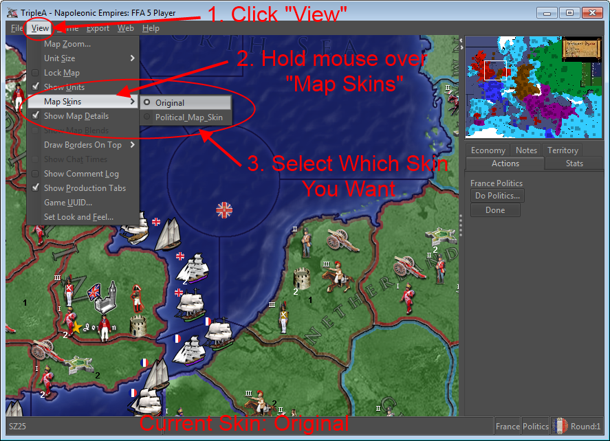
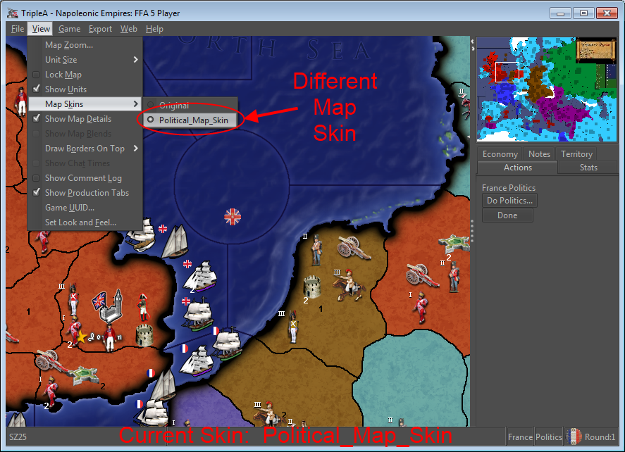
There is NO SPECIAL DIFFERENCE between an alternative map skin, and the original map skin. Both treated the same by the engine, in that they are "everything but the game xml".
So how does TripleA know which Skin is the default (original) skin, and which are the alternative skins?
The answer is the folder's name.
The Alternative Skins are just the Original Skin's folder name, then "-" (dash), then their skin name.
(The default/original folder's name must be the same name as referenced in the game xml's "mapName" property.)
So, if you had a map called "minimap", and you made a second skin for it, you would name the folder "minimap-mySkin" or "minimap-Awesome_Skin", etc.
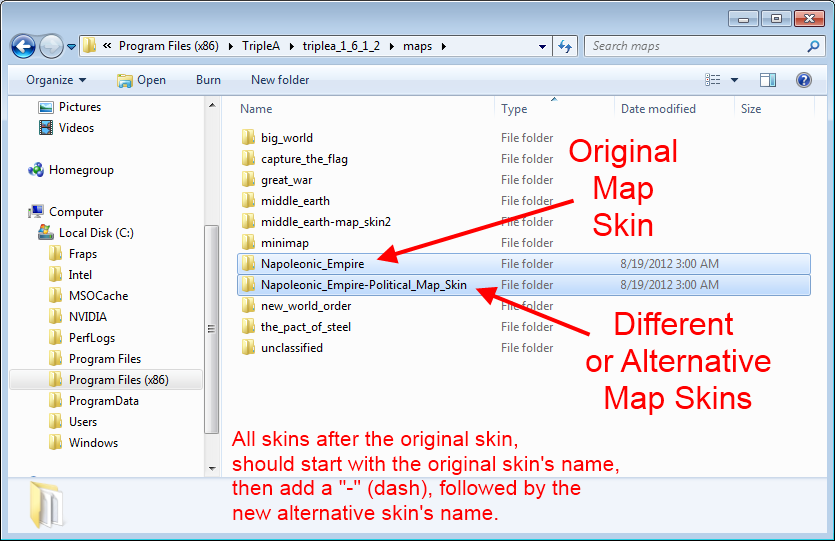
1.1.1 Making Your First Map Skin in Under 5 Minutes
The easiest way to make a map skin, is simply to copy another map's folder.
So, to begin, navigate to either your triplea program folder, or your triplea user folder, then go into the "maps" folder.
Now, we should probably change something about our map to make it different. So, lets replace all the infantry with pictures of the Cheezburger Cat.
Now select the game you want to copy. For the example, we will use "great_war". Copy and then Paste the entire map folder.
Rename your folder so that it starts with the original map name, then "-", then your skin name. We will name our folder "great_war-Cat_Infantry".
Right Click and save this image as "infantry.png"
Now, open up your new map's folder, then open up the "units" folder, then open up the "Americans" folder.
Paste the image of your cat here. It should overwrite the existing "infantry.png" image.
Now do the same for all the other nations.
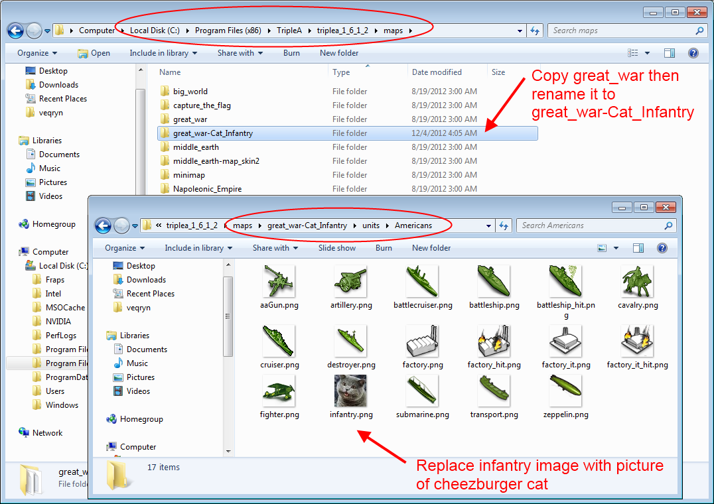
Start TripleA and load up Great War in order to test your new map skin.
After starting the game, click "View" and change your "Map Skin" to the new "Cat_Infantry" skin.
OMG, the USA better enter the war soon, or else the Western Front will run out of Cheezburgers!
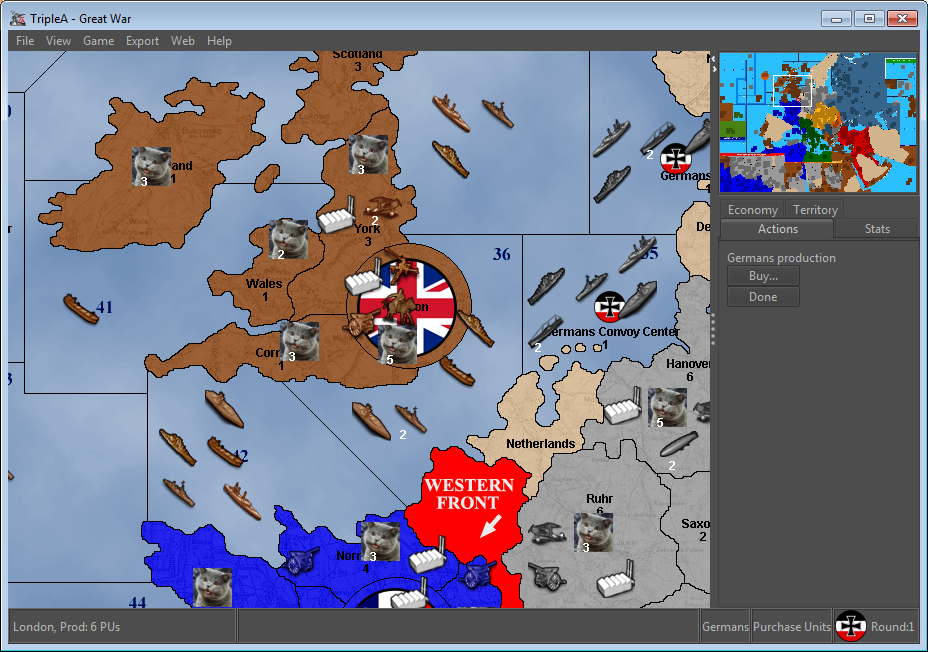
Obviously this probably not how you imagined your first map, or skin, but I think it is important to point out just how easy it can be to start changing stuff. You were probably able to do this all in less than 5 or 10 minutes.
Any time you don't like ANYTHING about a map's visuals or display stuff, you can go in and either change the original art or display files, or make a skin.
If you do a decent job of it, you could even distribute it to other players who are interested in viewing a map in a different way.
Lets say you want to change more than just replacing the default unit images? Lets say you want to build a map from scratch?
In this case, you will need to run all of the map maker utilities, as well as doing a little bit of preparation work. The easiest way to run all the map maker utilities, is with the Map Creator utility.
The Map Creator is nothing special. All it does is run the utilities for you, which you could do yourself using terminal or command line. Still, it does make things a little easier.
Before we start the Map Creator, lets go over what you actually need to have ready before you begin.
1. A Territory Border Outline Map (PNG). The territories should be outlined in pure black (hex: 000000), with no anti-aliasing (smoothing), which means if look close enough it should be pixelated. There should not be any art, or anything, on the map. You will use this map to run all the utilities, and will also make it into your baseTiles.
2. (Optional) A second map, same size, with art and and some texture. You normally make this map semi-transparent, and use it as the reliefTiles.
3. The names of all your nations (TripleA comes with art for specific nation names, so it is advisable to use existing names if they exist. ie: Germans, not Germany).
4. The name of your map.
5. A small image of your map, normally 250 pixels wide. Just use "Paint.net", or "MS Paint", or "Photoshop", or "GIMP", or any other picture/image editor to take your map image and shrink it to be 250 pixels wide.
You can use any map image you want. Normally it is a political map of the earth, but it could be mars, or middle earth, or westeros, or whatever.
If you do not have a Map Image, here is a good one to use. Feel free to save it, and then change the territory borders as you see fit.
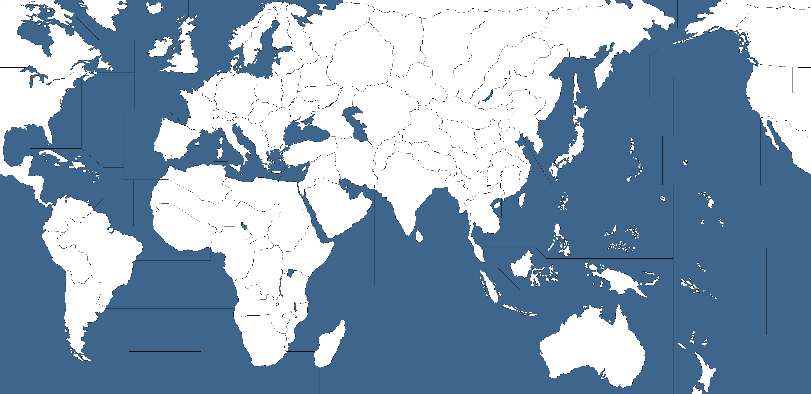
Now that you have a map and stuff, you need to make the map folder.
Go to your USER Maps Directory (not the program files directory) and create a new folder. Change the name of the folder to a simplified version of your maps name. The folder's name will be the "mapName" property in any xml you make.
Do not make the map name too long, and do not use special characters. (ie: "red_dawn" is a good map folder name. "**RED DAWN** : The Inva$ion of the USA" is a bad map name, and maybe even illegal or not recognizeable by triplea.)
If you are making an alternative skin for a map that already exists, then your map name must be original/default map folder's name, then "-", then your skin's name.
Inside of your map folder, you need at a bare minimum, the following files and folders.
You can go ahead and make the folders now. For the files, you can move your map's territory border image there, any relief image, and the smallMap.jpeg. For the other files, they will be created later.
Folders:Files:
- baseTiles
- flags
- units
- games (*Optional* If you are making an alternative map skin, then do not make this folder!)
- centers.txt
- polygons.txt
- place.txt
- map.properties
- smallMap.jpeg
- your_territory_border_image.png (*Not actually required, but you should put it here anyway*)
Example of a game folder with the bare minimum:
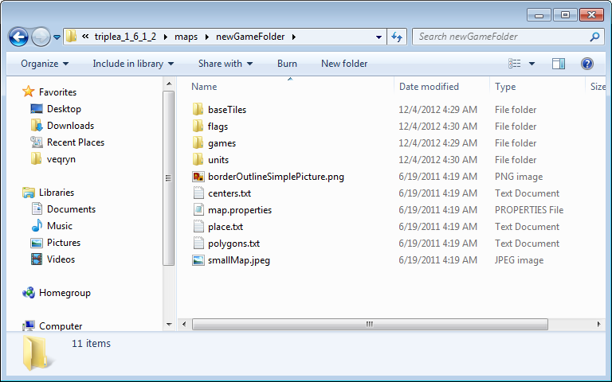
In addition, there are some other optional Folders and Files. TripleA will run fine without them, and we are going to ignore them for now:
Folders:Files:
- dice
- misc
- PUs
- reliefTiles
- resources
- sounds
- territoryEffects
- territoryNames
- notifications.properties
- objectives.properties
- politicstext.properties
- actionstext.properties
- production_tabs.properties
- production_tabs.nationName.properties
- tooltips.properties
- blockade.txt
- capitols.txt
- comments.txt
- convoy.txt
- decorations.txt
- kamikaze_place.txt
- name_place.txt
- pu_place.txt
- territory_effects.txt
- vc.txt
Example of game folder with everything possible:
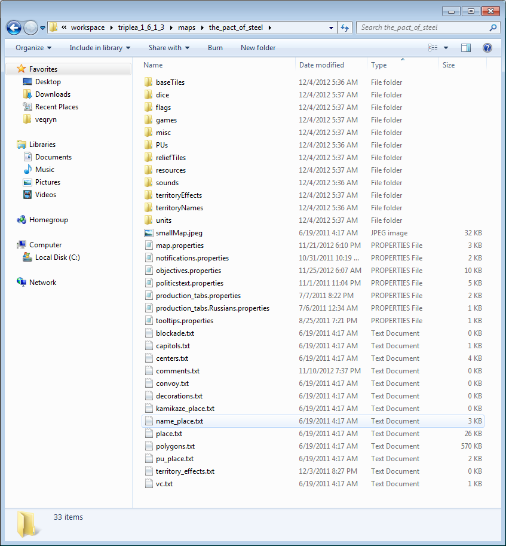
Now for the map creator.
To run the map creator, you can start TripleA, then click "Engine Preferences", then click "Map Creator".
Alternatively, you can run it by command line:
How to run the Map Creator 
cd bin
java -Xmx512m -classpath triplea.jar util/image/MapCreator
Example:
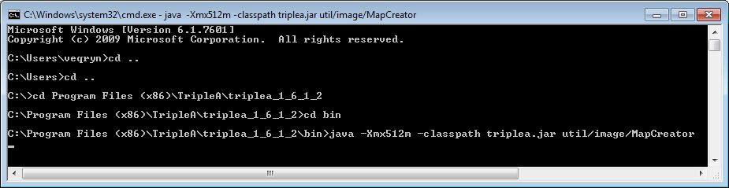
Now that it is running, you will see a simple screen with some options on the left, and some options in the middle.
The first button will load this html tutorial you are reading now.
Click the second button to point the map creator to your new folder.
The third box is where you can put your unit zoom amount (normally 0.75 or 0.5).
The forth and fifth boxes are for the size of your unit images (normally 48 pixels square).
Lastly, you can specify the amount of memory in megabytes that the utilities will run at. This is only related to the utilities, and is the same thing as changing the -Xmx512m to -Xmx900m, etc.
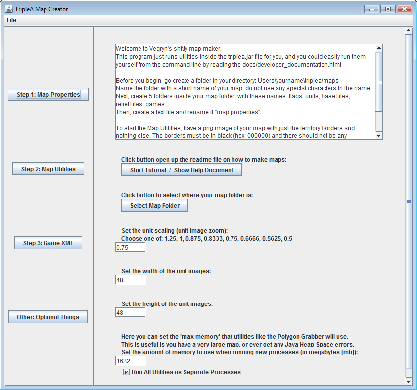
Now obviously you could draw your map by hand, and a good number of maps (including the sample one at the top) are done that way.
But lets say you already have a map in mind, maybe a scan of something you drew a long time ago. It has full art, and looks great, but it is not a "territory outline map".
Well, in this case, you will need to do a good chunck of work to create a territory outline map. You may have to draw the territory borders yourself, but in most cases you use the tools provided in software like Paint.NET, or GIMP, or Photoshop, to do the work for you.
I once made a map based on an existing map for a game called "ABattleMap". I will use my experience and some screenshots as an example. Both GIMP and Paint.net are free image manipulation programs, and I used Paint.net to get the territory lines. Immediately after I finished getting them done, I found the original author's source files, and found that he actually already had a territory map. So before you waste a ton of time, make sure that you have searched for the source files for the art you are using, because what you want might already be done.
To start, load up the image in your drawing program. You will be using 2 tools mostly:
1. The "magic wand", which is a selection thingy that will automatically select the current pixel and all connecting pixels of a same or similar color (you choose the tolerance).
2. The "paint bucket", which will fill in any area with a specific color, and the fill area can also be determined by tolerance. You can change the tolerance up at the top of the screen (Paint.net) after selecting one of these tools. Generally you want something between 10% and 40%, so lets start with 25%.
Secondly, you MUST disable anti-aliasing. Thirdly, you must select the color pure black (hex code 000000). TripleA will not recognize any lines or borders that are not pure black.
The purpose of what we are doing, is that we are going to "fill in" all of the territory borders with black. Then we are going to select the borders, and copy and paste the borders into a new image. We will end up with a territory border image that is pure black, on a white background. You can then use this image to complete all the map utilities in the map creator.
One thing to note is that territory borders can be Any thickness, but they should all be the Same thickness. Generally 1 pixel thick territory borders look the best, but some maps use 2 pixel thick.
1st. Some lines on the map might not be black. In my example map, the lines in France are not black, they are dark blue. The lines in Canada look black, but they are really dark brown.
So, take the Paintbucket, and click those borders (you may need to zoom in). That will fill in the territory bordes with black. Remember: you are clicking the BORDER, not the middle of the territory.
IF clicking on the border ends up filling in some part of the territory with black, then your Tolerance is too high. Undo, then reduce your tolerance, then try again. Now, go look around the map for any territory borders that are not yet black, and turn them black. Keep doing this until you are sure all territory borders are black.
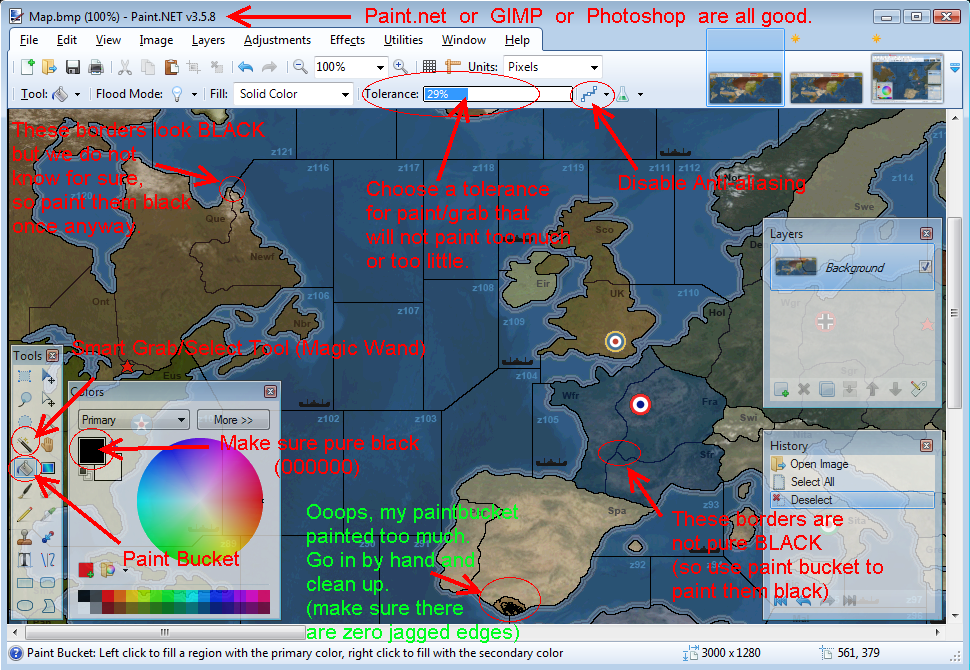
2nd. Using the magic wand tool, click on the territory border. If the pixels connect, your selection should grab the entire territory borders for the entire map. There might be some lag while your computer calculates this.
Now copy this. Now start a new image (same size as current one) (or start a new layer), and paste the territory borders into there. Save both files as new files, you might need them.
Take a look around your map to make sure you are not missing anything. You are looking for 2 main things: gabs in territory borders, and islands.
Gaps in territory borders occur when the magic wand did not grab all of the border. Go back and grab the rest of the border and add it to your image.
Islands will never be grabbed by the magic wand, because they do not connect to the main territory borders. You have to go back and grab each and every island by hand, now.
When you are done, turn your image "black and white". This will remove any colors on the map. After that, pump up the "contrast". This will make sure the borders are pure black.
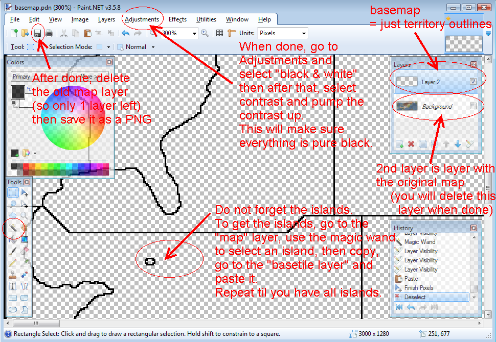
Your map is basically done. You can now fill in the water/sea zones with some color of blue.
Make sure the territory borders don't have lines sticking out from them, and that you are not missing any islands, or have gaps in your borders.
Congrats, you are done. Go run the map creator.
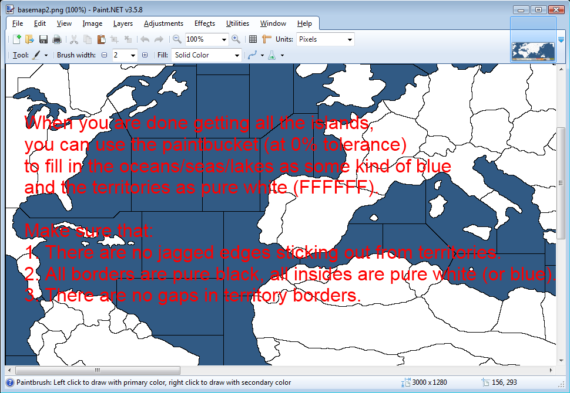
TripleA comes with several utilities for editing maps. In brief, these utilities will allow the user to create center points and names for each territory, and break the map up into 256x256 sized tiles, and do all the other work for you.
These are the utilities that can be used:
- Map Properties Maker : Creates the map.properties text file
- Center Picker : Picks center points for each territory
- Polygon Grabber : Grabs the (x,y) polygonal values of each territory
- Auto-Placement Finder : Picks placement for units (automatic)
- Placement Picker : Picks placement for units (manually)
- Tile Image Breaker : Breaks the map into 256x256 tiles (for baseTiles and reliefTiles folders)
- Decoration Placer : Creates the text files for placing custom images on the map
- Relief Image Breaker : No longer used (used to make relief territory images)
- Image Shrinker : Creates a mini-sized map image
- Tile Image Reconstructor : Recreates an image from basetiles or relief tiles
All images are in PNG format except for the mini-map image produced by the Image Shrinker utility, which is in JPEG format.
Pre-requisite !
A pre-made map needs to be created for the utilities to work. The map needs to have black borders separating each territory. This needs to be completely black as in #000000 or R=0 G=0 B=0. The insides of the territories should be white and the oceans or water values may be colored.
You should run the map utilities using a binary (not source) distribution of TripleA.4.1.1 Map Properties Maker
The Map Properties Maker will create the "map.properties" file for you.
This file includes various information related to how to display your map, such as how many pixels wide and tall your map image is, or how zoomed out your units will be.
You can add and remove new players, and click on their color to change their color.
Clicking the "Show All Options" will show additional options that can be changed (the default values are pre-selected).
The following nations/players are already supported by TripleA, and have flags and unit art already.
If you want to use them, you must use their EXACT names, which are case sensitive.
- Americans
- Australians
- British
- Canadians
- Chinese
- French
- Germans
- Italians
- Japanese
- Neutral
- Puppet_States
- Russians
In addition, the 'player' called "Impassible" should be listed, which even though it is not a real player, it will determine the color of impassible territories.
Be sure to save the file when you are done.
Unfortunately you can not load a map.properties file (not yet anyway). However, the file is just a text file, and you can edit it by hand easily using Notepad or Notepad++ or any other text editor you have.
Please note that unit zoom must be one of the following values.
0.75 or smaller is recommended.
- 1.25
- 1.0
- 0.875
- 0.8333
- 0.75
- 0.6666
- 0.5625
- 0.5
How to run Map Properties Maker cd bin
java -Xmx512m -classpath triplea.jar util/image/MapPropertiesMaker
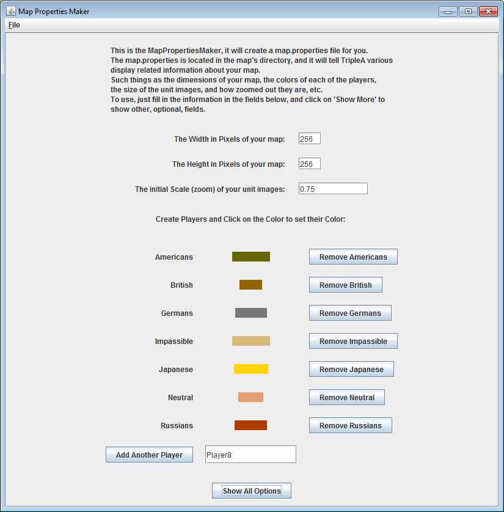 Fig 3.1.1.0
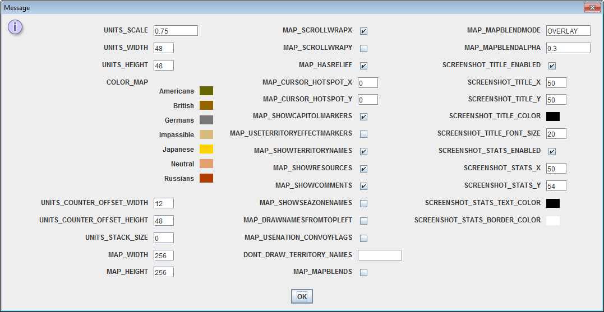 Fig 3.1.2.0
4.1.2 Center Picker
Run the center picker from the bin directory.
The center picker creates or edits the "centers.txt" file for you.
How to run Center Picker cd bin
java -Xmx512m -classpath triplea.jar util/image/CenterPicker

Fig 4.1.2.0
Execution flow of the Center Picker is listed below.
Program Action User Action 1 Show a "Select Map File" dialog 2 Select a map image file 3 Show a "Select Polygons File" dialog 4 Select a polygons.txt file or cancel and run without. 5 Show map image 6 Left click on any territory to create a center point, Right click to delete a point. 7 Show a dialog box with a default territory name 8 Put a new territory name and press "OK" 9 Show confirmation dialog 10 Confirm with "Yes", or cancel with "No" or "Cancel" 11 Show red dot on territory
After creating center points for all the territories, proceed to save them. The center picker will ask for a directory to save the center points. These center points will be needed for other map utilities later on, and for TripleA it self to run the game.
4.1.3 Polygon Grabber
Run the polygon grabber from the bin directory.
The polygon grabber creates or edits the "polygons.txt" file for you.
How to run Polygon Grabber cd bin
java -Xmx512m -classpath triplea.jar util/image/PolygonGrabber

Fig 4.1.3.0
Execution flow of the Polygon Grabber is listed below.
Program Action User Action 1 Show a "Select Map File" dialog 2 Select a map image file 3 Show a "Select Centers File" dialog 4 Select a centers.txt file 5 Show map image 6 Left click on any territory to select it 7 Selected territory is highlighted in red 8 Right click on highlighted territory (hold shift for more) 9 Show name option dialog 10 Confirm if territory name is correct 11 Highlight selected territory in yellow 12 Go to next territory
The polygon grabber utility comes with a special "Island Mode" feature. It has been known that when dealing with many islands in one sea zone causes a visual problem. Doing the sea zone first will cover up any islands inside. This will leave the user unaware if the islands have been selected or not. The "Island Mode" feature helps over come this by out-lining selected territories in red and not filling them in with yellow, as is the default. Look at figures 4.1.3.1 and 4.1.3.2 for examples of "Island Mode" at work.

Fig 4.1.3.1

Fig 4.1.3.2
Notice how in figure 4.1.3.1 one of Sardinia's islands was covered up when the sea zone was done first. Island mode helped show the covered up island and allowed us to select it.
When done, save the polygon points to disk.
4.1.4 Auto-Placement Finder
The auto-placement finder can be used before the placement picker. It automates the placement picking procedure and picks what it chooses to be the optimal placement points.
The Auto-Placement Finder creates the "place.txt" file for you.
It is best to use the auto placement picker first, then check the placements in the normal (manual) placement picker.There are some pre-requisites that need to be fulfilled before running the auto-placement finder:
- The centers.txt and polygons.txt files exist
- The above text files need to be in their finalized map directory
- Your map's folder must be in the maps directory where triplea can find it: users/yourname/triplea/maps/
Run the placement picker from the bin directory. When run it will ask for the map name. The map name IS the exact name of the map folder.
How to run Auto-Placement Finder cd bin
java -Xmx512m -classpath triplea.jar util/image/AutoPlacementFinder

Fig 4.1.4.0
When the auto-placement finder is done creating the placement points, it will prompt a dialog in order to save the placement points to disk.
4.1.5 Placement Picker
Run the placement picker from the bin directory.
The Auto-Placement Finder creates or edits the "place.txt" file for you.
How to run Placement Picker cd bin
java -Xmx512m -classpath triplea.jar util/image/PlacementPicker
Placement Picker commands are as follows:
Command Result Left Mouse Button Start in this territory CTRL/SHIFT + Left Mouse Button Add a placement point to the list Right Mouse Button Remove last placement point CTRL/SHIFT + Right Mouse Button Save placement points for that territory
Figure 4.1.5.0 shows an example of U.K. with its placements done.

Fig 4.1.5.0
When done save the placement points to disk.
4.1.6 Tile Image Breaker
This utility will break up the original large map into tiles of size 256x256 so that it can be used by TripleA. There are not any special prerequisites to use this utility other than running it and choosing the correct map for it to break up.
Use this utility to fill the "baseTiles" folder with your "territory border image".
You can also use this to fill the "reliefTiles" folder with a semi-transparent art or textured map image.
How to run Tile Image Breaker cd bin
java -Xmx512m -classpath triplea.jar util/image/TileImageBreaker

Fig 4.1.6.0
Program Action User Action 1 Show a "Folder Save Location" dialog 2 Select a directory to save the tiles 3 Show a "Select Map File" dialog 4 Select a map image 5 Process map and break into tiles 6 Wait until finished
Once the Tile Image Breaker is done, all the tiles will be saved in the directory that has been selected at the start.
4.1.7 Decoration Placer
The decoration placer makes putting custom images on your map easy.
Essentially you choose which image you are placing, then you load that image or set of images onto the map.
The images if named exactly equal to a territory name, will be automatically placed at the center of that territory.
Otherwise, all other images will be placed at the upper left corner of the map.
One by one, you click each image, drag it to where you want it to be, then click again to put it there.
The decoration placer covers the following folders and files:
Folders:Files:
- flags
- misc
- PUs
- territoryEffects
- territoryNames
- blockade.txt
- capitols.txt
- comments.txt
- convoy.txt
- decorations.txt
- kamikaze_place.txt
- name_place.txt
- pu_place.txt
- territory_effects.txt
- vc.txt
You can use the "edit options" to highlight all images in a red square, or to have the image name directly above the image.
When done, be sure to save the file.
How to run Decoration Placer cd bin
java -Xmx512m -classpath triplea.jar util/image/DecorationPlacer
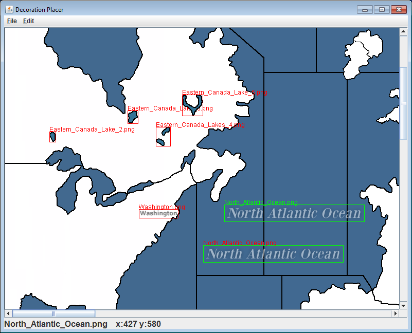 Fig 3.1.7.0
4.1.8 Relief Image Breaker
The relief image breaker will take your map and create a textured image for each territory.
TripleA no longer uses these Relief Territory images, and instead uses "Relief Tiles" (which you make using the "Tile Image Breaker").4.1.9 Image Shrinker
This utility will create a copy of the original map, but shrunk down to a custom scale. TripleA uses this small scale map as a "mini-map".
You should save this image as "smallMap.jpeg" and put it into your map's folder.
You do not have to use this program, you can use ANY image manipulation or drawing program you want in order to make your smallMap.jpeg.
It is advisable to keep the smallMap's width between 200 and 300 pixels.
How to run Image Shrinker cd bin
java -Xmx512m -classpath triplea.jar util/image/ImageShrinker
Program Action User Action 1 Show a "Select Map File" dialog 2 Select a map 3 Show a "Scale Input" dialog 4 Enter a floating point scale value (ie. 0.1) 5 Image saved as smallMap.jpeg in current directory 4.1.10 Tile Image Reconstructor
This utility will recreate an image from the basetiles or relief tiles.
Tile Image Reconstructor cd bin
java -Xmx512m -classpath triplea.jar util/image/TileImageReconstructor
So what about all those other files and folders?
Here we can explain what everything else is for.
So far you have used the map utilities to create the following files, and fill the following folders:
Folders:Files:
- baseTiles
- reliefTiles
- centers.txt
- polygons.txt
- place.txt
- map.properties
- smallMap.jpeg
You may have also used the decoration placer to create the following placement text files:
- blockade.txt
- capitols.txt
- comments.txt
- convoy.txt
- decorations.txt
- kamikaze_place.txt
- name_place.txt
- pu_place.txt
- territory_effects.txt
- vc.txt
This leaves the following folders:
Folders:Files:
- flags
- units
- games
- dice
- misc
- PUs
- resources
- sounds
- territoryEffects
- territoryNames
- doc
- notifications.properties
- politicstext.properties
- actionstext.properties
- production_tabs.properties
- production_tabs.nationName.properties
- tooltips.properties
- objectives.properties
- sounds.properties
The "games" folder holds the game xml's, which contain all the information about the board setup, the rules, etc. How to make the xml is not covered here.
The "flags" folder is required (if you are using non-standard nations), and you need to fill it with 3 images for each nation you have.
Lets say one of your nations is called "Germans". In this case you need a middle sized flag named "Germans.png" which should be 32x32 pixels. You also need a small version called "Germans_small.png" which is 12x12 pixels. And lastly you need a large version called "Germans_large.png" (which shows up on the map at the capital), which can be anywhere from 32x32 to 50x50 to 100x100 or whatever you want.
In addition, if you are using kamikaze zones then you need a "Germans_fade.png" flag (32x32 to 40x40 to 50x50). And if you have convoy zones or convoy route, you may optionally add a "Germans_convoy.png" (32x32 to 40x40 to 50x50).
The "units" folder is also required (if you have any non-standard nations, and/or any non-standard units), and you need to fill it with 1 folder for each nation. The folders must be the exact names of your nations (case sensitive), and each folder is filled with every unit in the game (again, case sensitive).
Pay attention to the case sensitivity, because "infantry.png" is different from "Infantry.png" (also use .png, not .PNG).
If you have any technology in your map, you need to include some _variations of each unit, such as _jp for jet power, etc. See the list below:
Anything I list as "_something" means that you must have the units exact name in front of it, example: fighter_jp
- if the unit is called "aaGun" then you need units called "rockets", "rockets_r", and "aaGun_r"
- if the unit has "isAA" or "isAAfor...", but is not exactly named "aaGun", then you need units called "_rockets" and "_r" and "_rockets_r"
- if the unit has "isRocket" or "isAA", but is not exactly named "aaGun", then you need "_rockets"
- if the unit has "isAA" or "isAAforCombatOnly" and/or "isAAforBombingThisUnitOnly", then you need "_r"
- if the unit has "isAir", but not "isStrategicBomber", then you need "_lr", and "_jp", and "_lr_jp"
- if the unit has "isAir", and is "isStrategicBomber", then you need "_lr", and "_hb", and "_lr_hb"
- if the unit has "isSub", then you need "_ss"
- if the unit has "isFactory" or "canProduceUnits", or is called "factory", then you need "_it", and "_it_hit"
- if a unit can be damaged (by being a factory, or by having "canBeDamaged", or by having more than one hitpoint) then you will need "_hit"
- if a unit can be disabled, then you will need "_disabled"
The "dice" folder contains dice images to use. You must have 3 for each die possibility (Example using '1' as die result): "1.png", "1_hit.png", and "1_ignored.png"
The "misc" folder contains the "blockade.png" (for blockade zones), the "cursor.gif" (custom cursor image, 32x32 gif), and the "vc.png" (victory city image).
In addition, you can fill the misc folder with ANY images you want. You can then place these images all over the map, anywhere you want, using the decoration placer and the decorations.txt file.
The "PUs" folder contains images for each territory production value. Generally numbers 1-20 are enough. Example: "2.png"
The "resources" folder is not implemented yet, but eventually it will be used to display non-standard territory resources on the map.
The "sounds" folder can be filled with folders for each sound that the game allows. Each folder can then be filled with multiple sound files, which will be played at that sound point. Only ".wav" sound files are supported.
To see what sound folders are allowed, check the "assets" folder inside of the triplea program folder.
You can also customize the folders by adding "_nationName" for nation specific sounds.
The "territoryEffects" folder contains territory effect images, which can be shown on the map in any territory that has that effect (which is determined in the game xml). Since territories can have more than 1 effect, you can choose multiple placement points for multiple images, using the decoration placer utility.
The "territoryNames" folder contains png images of the territory names, exactly named after the territories in the game (spaces included). So "Eastern USA" becomes "Eastern USA.png". The placement points for the images is choosen using the decoration placer utility.
The ".properties" files are just text files, and can be edited using Notepad or any other text editor.
These normally relate directly to something in the game xml.
The "notifications.properties" file has keys and values for notifications shown by the xml (popup messages).
The "objectives.properties" file has special information for displaying national objectives and triggers/conditions in an objectives tab for the user.
The "politicstext.properties" file has keys and values for political action text and button texts.
The "actionstext.properties" file has keys and values for user action text and button texts.
The "production_tabs.properties" and "production_tabs.nationName.properties" allow for customizing the production window in the game, including the tabs and ordering of the units.
The "tooltips.properties" allows for the customizing of the tooltips for units and territories.
The "sounds.properties" allows you to specify which era of sounds (ww2, preindustrial, classical, future) you are using, and also set up custom sound paths.
The "doc" folder can hold help documents and stuff. It also has the "images" folder inside of it.
The "doc/images/" folder contains all images that you plan on using inside your game notes and inside any triggerred notifications.
- Mark Christopher Duncan (Veqryn) : The Map Creator, and this Tutorial